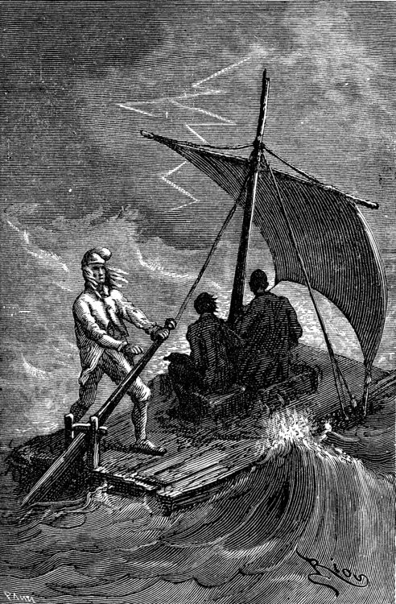
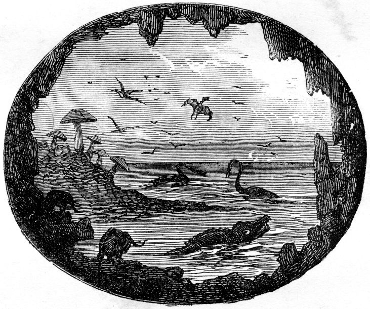

Explore The Story
Axel the enthusiastic and excitable nephew of the illustrious professor and mineralogist Otto Lidenbrock, narrates the tale of the journey to the center of the Earth. On May 24, 1863, Lidenbrock consults a recently-acquired runic manuscript of the 12th century and discovers an encrypted message from 16th-century Icelandic alchemist Arne Saknussemm. Lidenbrock is excited, and believes that Saknussemm wants to share a scientific discovery. The professor wants to decipher the message but has trouble doing so.  Luckily, Axel manages to decrypt the document. Arne Saknussemm reports that the traveler who climbs up on the crater of Snæfells volcano can get into the center of the Earth; he apparently undertook this journey himself. Axel knows that his uncle will want to make a similar attempt and decides not to tell him of the find, but eventually gives in. Lidenbrock immediately starts planning the journey and tells his nephew to come along as well. Axel is reluctant until his fiancée Grauben, his uncle’s ward, tells him that he ought to make the excursion. Lidenbrock and Axel leave Hamburg and travel to Iceland. In Reykjavik they hire a guide named Hans, a placid and stoic man of large size. The three of them climb the volcano crater and find a slope downward. They manage to penetrate the depths of the Earth. When they reach a crossroads, Lidenbrock first chooses the wrong route; this initial path is a dead end and they are forced to turn back. Meanwhile, their supply of water runs out and it seems that the expedition is doomed to fail. Throughout this stage, Axel is exceedingly anxious and pessimistic. He is intrigued, though, that he and his fellow adventurers seem to be venturing back into the prehistoric past in terms of geology. Hans leaves his companions to go in search of water. He finds a source that flows through the wall of a cliff and leads the others there. After Hans drills a hole in the wall, a small brook flows forth: this body of water is named after Hans. At one point in the journey, Axel is separated from his uncle and guide; he despairs that he will die of hunger and thirst in the dark cavern. Thankfully, an auditory trick (much like the use of sound in cathedrals and caverns) allows them to reconnect. The travelers soon come to the shore of a vast underground sea. There they see huge mushrooms, which are identified as the giant champignons. In addition, there are more forms of fungi and bizarre plants. The explorers know that they have to cross a sea and do so, but this sea is much larger than they expect. On their watery route, they see a battle between massive, ancient creatures—the ichthyosaur and plesiosaur. As the journey continues, the weather shifts and a massive storm begins. The adventurers are tossed about on the waves; thunder and lightning sound and spark all around. An electric ball alights on the explorers' raft and flames burst out. They only survive by lashing themselves down. Finally the storm quiets and deposits Axel and the others on the other side of the sea. It is not long, though, before the compass reveals that they actually ended up on the same side from whence they began. Lidenbrock is at first enraged, but then cheerfully decides to plow onward. Axel is consistently amazed at his uncle’s stubbornness and pluck, and wishes that they could just go home. Before leaving, though, the adventurers explore this other part of the shore and discover incredible fossilized specimens from the earliest days of planetary life. They even find entire preserved human bodies. When they wander into a Tertiary-period forest of incredible foliage, they catch sight of mastodons and a twelve-foot man. Not wanting to be detected, Axel and his companions flee quickly. They also discover a rusted knife and markings on a rock; Saknussemm was there and had found the route to the center. It is a twist of fate that the storm actually brought the expedition back to where it needed to be. Axel and his companions continue along Saknussemm’s path, but are stopped by a huge boulder that must have lodged in the passageway sometime between his journey and their own. Now flush with zeal for the journey, Axel suggests using firepower to blow an opening. The explorers set this plan in motion and wait on their raft. After the explosion occurs, Axel, his uncle, and Hans realize that they've created a disruption. The entire sea goes rushing through the aperture and the three men are carried wildly along on the waves. This experience is terrifying; they almost perish. After a time, they realize that they are moving vertically up the shaft of the mountain. The heat grows and the walls crumble around them. Lidenbrock is not frightened and knows that this eruption is what will take them up to the surface of the Earth. The raft tumbles out of the volcano of Etna in Stromboli, a site in the middle of the Mediterranean. Mercifully, all three men survive and find themselves in a lush, green environment. They eat fruit and drink from a stream. Stromboli fisherman assume that the subterranean explorers have survived a shipwreck and help them get home. After his safe return, Lidenbrock becomes famous and renowned for his narrative and for lectures on his journeys.